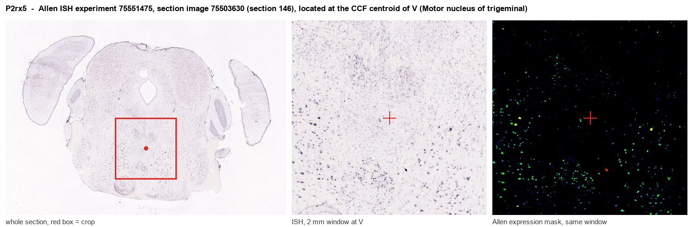

P2rx5
P2X purinoceptor 5 (P2X5)
Spatial tier: RESTRICTED · Class: ION_CHANNEL · Top region: V (Motor nucleus of trigeminal) · Positive regions: 22/554
44.4Discovery Score
39.0Targetability Score
CEvidence grade C
What this means: P2rx5: fine CCF profile is restricted toward V (top regions: V, XII, AD, DMX, DG-po; 22 positive regions); direct spatial validation is still required.
Function in V: evidence, prediction, innovation
- Gene function
- P2rx5 encodes the P2X5 subunit of the ATP-gated P2X family of trimeric cation channels. In rodents it produces small, slowly desensitising currents and readily co-assembles with P2X1 or P2X4 into heteromers, whereas most human P2X5 is non-functional because of a common splice variant. It is prominent in developing muscle, skin and immune cells.
- Region function
- The motor nucleus of the trigeminal nerve in the pons contains the alpha and gamma motoneurons that drive the jaw-closing and jaw-opening muscles, generating chewing, biting and licking under premotor control from the trigeminal reticular formation and main sensory nucleus.
- Published in this region
- expression only No region-specific literature found. Cheung 2005 mapped P2X subunit expression across rat brain development, reporting P2X5 among the subunits present in motor regions and an inhibitory purinergic influence on motor axon outgrowth, and Brosenitsch 2005 described developmental regulation of the related P2X3 subunit in nucleus ambiguus motoneurons, the closest cranial-motor parallel. The trigeminal motor nucleus itself is well characterised anatomically and functionally (Morita-Isogai 2017; Slaoui Hasnaoui 2020).
- Predicted function
- Prediction: in trigeminal motoneurons P2X5 would form heteromeric ATP-gated channels providing a slow, weakly desensitising depolarising current in response to ATP co-released with glutamate or from astrocytes, boosting motoneuron recruitment during sustained chewing and possibly mediating purinergic gliotransmission during masticatory fatigue. Local P2X blockade with PPADS or TNP-ATP, or P2rx5 deletion, is predicted to reduce bite-force endurance and the facilitation of rhythmic jaw movements rather than to abolish chewing outright.
- Innovation
- ★★★★★ 5/5 Purinergic modulation of jaw motoneurons is essentially unstudied even though the nucleus is easy to target and bite-force and licking give quantitative readouts.
- Tools
- P2rx5 knockout mice; P2X antagonists PPADS, suramin and TNP-ATP; agonists ATP and alpha,beta-methylene-ATP; anti-P2X5 antibodies; trigeminal motoneurons accessible with ChAT-IRES-Cre (JAX 006410) and retrograde AAV or cholera toxin B from the masseter.
- References
Direct evidence located at the region

Allen ISH experiment 75551475, section image 75503630 (section 146): the section that contains the CCF centroid of Motor nucleus of trigeminal according to the Allen image-to-atlas alignment (reference_to_image), with a 2 mm window around that point. Left: whole section, red box = window. Middle: ISH signal. Right: Allen's expression-mask view of the same window. open this image in the Allen viewer
Look it up yourself: Allen Mouse Brain ISH for P2rx5Allen reference atlas: V (structure 621)ABC Atlas MERFISH viewer(in the ABC Atlas choose dataset MERFISH-C57BL6J-638850-CCF, colour cells by gene "P2rx5" or by parcellation_substructure "V")All genes confined to V + 3-D brain
Direct spatial evidence
MERFISH REGION LOCATOR

Regional expression figure

Predicted WMB × fine-CCF profile; not direct full-transcriptome spatial measurement.
Spatial profile
Evidence and specificity
- Evidence status
- PREDICTED_FINE
- Direct sources
- None; predicted localization only
- Exclusive threshold
- 12 positive regions out of 554
- Spatial specificity
- 0.328
- Top-region fraction
- 0.065
- Filter status
- PASS
Interpretation limits
- Cell-type-to-region projection is imputed expression, not direct spatial measurement.
- Adult reference atlases do not establish stability across age, sex, strain, state, or disease.
- Transcript abundance does not guarantee protein abundance or genetic-tool performance.